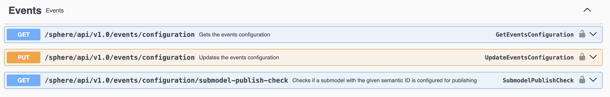

Events
⚠️ Experimental This is an experimental feature and usage in productive systems is not advised!
Besides the HTTP/REST based API endpoint, twinsphere also offers a MQTT based API for receiving events about shells and submodels.
An event tells you that something changed, not what it changed to. It carries no copy of the shell or submodel — you read the current state over the REST API when you are ready for it. This keeps events small and means you always act on current data rather than on a snapshot that may already be stale.
Configuration
Everything is published by default — every shell change and every submodel change, including submodels that carry no semantic ID at all.
If you do not want to be told about certain submodels, block them. Blocking is configured in the "Events"
section of the /sphere/swagger/index.html.

An empty block list means nothing is withheld:
{
"publish": {
"submodels": {
"blockedSemanticIds": []
}
}
}
To stop receiving events for a submodel type, add its semantic ID:
{
"publish": {
"submodels": {
"blockedSemanticIds": [
"https://admin-shell.io/ZVEI/TechnicalData/Submodel/1/2"
]
}
}
}
A submodel is withheld if any of its semantic IDs matches the list. Shell events are never filtered.
A configuration change takes up to a minute to take effect, so you may briefly keep receiving events for a semantic ID you have just blocked.
Regex
To use regular expressions instead of exact matches, prefix your semantic ID with "$regex=" and provide a valid regex expression. If you need to use special characters in your pattern (such as $ / . @ >) you'll need to escape them with double backslashes (\\).
For example, to block all submodels whose Semantic ID includes "test":
{
"publish": {
"submodels": {
"blockedSemanticIds": [
"$regex=^test$"
]
}
}
}
Multiple regex expressions, as well as matching with static strings, is possible.
Connecting to the broker
Connection is based on mutual-TLS authentication with certificates. At present, we only support the thumbprint matching strategy.
Certificate creation
- Create your own certificate (it can be self-signed or issued by a valid certificate authority, but ensure you store this certificate securely as a SECRET). You can simply follow this guide ⧉ or use a tool of your choice.
- Send us the thumbprint via a JIRA ticket request. We will provide you with the connection details once the thumbprint has been granted access. The thumbprint itself is not a secret, so it can be sent through unsecured channels.
To test out the connection, we recommend using mqttx.app ⧉
Connecting
Any MQTT 3.1 or 5.0 client library in any language is supported. Make sure you understand and distinguish between the
MQTT client ID (aka Session ID) and the username which you need to provide, like in WithCredentials() method
in the C# example below.
Your client ID (session ID) can have any value, but make sure it is fixed and not dynamic. This value will be used to map the MQTT session back to your client in cases such as restarts and failures.
Here is a generic C# example with MQTTNet on how to establish a connection:
const string clientId = "your-fixed-client-id-per-consumer"; // aka Session ID
const string username = "you will get this value from us";
var mqttClientConfiguration = new MqttClientOptionsBuilder()
.WithClientId(clientId)
.WithTcpServer(_eventBrokerHost, _eventBrokerPort)
...
.WithCredentials(username, "")
Single connections
Most common case will be that you subscribe to events in a single-instance with a fixed clientId (any value as long as it is fixed between deployments and restarts). In case of rolling deployments, you don't necessarily need to disconnect the "old" client first. The old client will automatically get a disconnect once the new client connect with the same username / clientId combination.
Multiple connections
For cases where you want to have multiple concurrent connections, we support up to 3 concurrent sessions per "username".
You can refer to Microsoft docs ⧉ on some session ID / client ID naming patterns in case of multiple concurrent connections.
Topics, message contracts and QoS
Following MQTT topics are supported:
twinsphere/shells/<shell id - base64 encoded!>/createdtwinsphere/shells/<shell id - base64 encoded!>/updatedtwinsphere/shells/<shell id - base64 encoded!>/deletedtwinsphere/submodels/<submodel id - base64 encoded!>/createdtwinsphere/submodels/<submodel id - base64 encoded!>/updatedtwinsphere/submodels/<submodel id - base64 encoded!>/deleted
MQTT wildcards for subscriptions are supported at the "id" level, for example, to subscribe to all shell update events,
use: twinsphere/shells/+/updated
The topic tells you which entity changed, and it is the only place the identifier appears — the message body does not repeat it. The third segment is already in the encoded form the REST API expects, so you can pass it straight through:
topic: twinsphere/submodels/aHR0cHM6Ly9leGFtcGxlLmNvbS9zbS8x/updated
call: GET /submodels/aHR0cHM6Ly9leGFtcGxlLmNvbS9zbS8x
Decode it only if you need the identifier in readable form for logging or correlation.
Messages are delivered with a QoS of 1 (at-least-once), which means that duplicates are possible and should be expected.
Message contract
The message body is small and always uncompressed JSON:
{
"version": "experimental",
"timestamp": "2026-08-04T10:11:12.3450000Z",
"eventId": "66b0f3c2a1b2c3d4e5f60718",
"affectedShellIds": ["urn:example:shell:1"]
}
| Field | Meaning |
|---|---|
version |
Contract version. Stays experimental while the feature is experimental. |
timestamp |
When the change happened, UTC in ISO 8601 format. Not when the message was sent. |
eventId |
Identifies the change. Useful for discarding duplicates — see below. |
affectedShellIds |
Shells that referenced this submodel at the time of the change. Submodel topics only. |
affectedShellIds is present on every submodel event, including deletions, and may be an empty array. It is absent on
shell events, because the topic already names the shell.
⚠️ Unlike the identifier in the topic, the identifiers in
affectedShellIdsare not encoded. Encode them yourself before using them in a REST call such asGET /shells/{id}.
There is no payload field. If you are migrating from the earlier contract, the absence of payload is how you
recognize the new format.
Handling duplicates
QoS 1 means the same event can arrive more than once. Keep a short-lived set of the eventId values you have already
processed and skip repeats.
Be aware of the limit of this approach: eventId reliably identifies a redelivery of the same message, but it is
not a guarantee that a given change is announced exactly once. After an internal retry the same logical change may
arrive with a different eventId. Treat event handling as idempotent — because events carry no data, re-reading the
entity over REST twice is harmless.
MQTT protocol details
For information on supported MQTT versions and limitations on MQTT features, please refer to this resource. Equally important are the quotas & limitations.
Delivery rate and keeping up
Three limits matter, and all apply per session:
- Your session receives at most 100 messages per second.
- While your client is disconnected, the broker queues messages for your session. Once that queue reaches 100 messages or 1 MB, whichever comes first, the session is terminated and the queued messages are gone.
- A persistent session survives a disconnect for at most 8 hours. After that it expires and is discarded together with its subscriptions and anything still queued. MQTT 3.1.1 clients get these 8 hours by default; MQTT v5 clients may request a shorter interval.
If you need more than 100 messages per second, subscribing more often to the same topic filter does not help: every
session receives its own copy of every message. Split the work across sessions instead: the six topics above are
independent, so a session subscribed to twinsphere/shells/+/updated and another to twinsphere/submodels/+/updated
each get their own 100 messages per second. This works today with any MQTT version.
Additional information
There are several important aspects to note regarding the twinsphere interface:
- Events are published within seconds of the change being made via the REST API.
- Duplicate events should be expected, and are commonplace when using QoS 1.
- Events are best effort. They are not retried and not replayed, so an event can be missed — while your session is disconnected, while the broker is unreachable, or because your session was terminated for falling behind. Do not use events as a system of record; use them as a prompt to read current state.
- No ordering is guaranteed between different entities. Events for one entity reach a topic in the order they happened.
Troubleshooting
If you encounter any issues, we recommend enabling tracing of MQTT messages depending on the library you are using. For example, on the .NET Platform using MQTTNet, you can enable traces like this.
In some cases however, when it comes to features like authorization and topic permissions, you might experience disconnects from the broker without detailed explanation. Ensure that you subscribe to the correct topic names and double check for typos or similar issues. In the worst case scenario, don't hesitate to submit a ticket issue with us for further assistance in debugging the problem.
If you stop receiving events for a particular kind of submodel, check the block list first — a blocked semantic ID is silent by design and produces no error anywhere.
A disconnect that happens only under load and reconnects cleanly is usually not a configuration problem, but your
session being dropped for falling behind: unread messages pile up until the broker terminates it. What decides this is
your own consumption rate, not the 100 per second ceiling — at QoS 1 most libraries acknowledge when your handler
returns, so a handler taking 200 ms consumes five messages per second. Acknowledge first and process on separate
workers. A persistent session does not help, as its offline queue holds only 100 messages. MQTT 3.1.1 gives no reason
for a disconnect, so this looks like a network fault; connect with MQTT v5 and the broker states it
(QuotaExceeded).